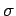
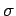

Inhalt Index DeskTop Bronstein

 Wahrscheinlichkeitsrechnung und Mathematische Statistik Theorie der Meßfehler Meßfehler und ihre Verteilung Meßfehlereinteilung nach quantitativen Merkmalen
Wahrscheinlichkeitsrechnung und Mathematische Statistik Theorie der Meßfehler Meßfehler und ihre Verteilung Meßfehlereinteilung nach quantitativen Merkmalen


| (16.203a) |
| (16.203b) |
Da der Erwartungswert der Summe der wahren Fehler und der Erwartungswert der Summe der scheinbaren Fehler vi von n Messungen einer Größe verschwindet, werden die verschiedenen Fehler mit Hilfe der Fehlerquadratsummen berechnet:
| (16.204a) |
Für die praktische Auswertung ist nur (16.205b) von Interesse, weil nur die Werte vi aus den Meßergebnissen ermittelt werden können. Deshalb definiert man
als mittleren quadratischen Fehler der Einzelmessung der Meßreihe. Der Wert  ist ein Näherungswert für die Standardabweichung  der Fehlerverteilung.
ist ein Näherungswert für die Standardabweichung  der Fehlerverteilung.
Im Falle der Fehlernormalverteilung gilt für :
| (16.206) |
Das bedeutet: Die Wahrscheinlichkeit, daß der wahre Fehler betragsmäßig den Wert nicht übersteigt, beträgt ca. 68 %.
Wahrscheinlicher Fehler ist die Bezeichnung für eine Zahl , für die gilt:
| (16.207) |
Das bedeutet: Die Wahrscheinlichkeit, daß der Fehler den Wert  nicht übersteigt, beträgt in diesem Falle 50 %. Die Abszissenwerte teilen die linke und rechte Fläche unter der Dichtefunktion in je zwei gleich große Hälften (s. Abbildung).
nicht übersteigt, beträgt in diesem Falle 50 %. Die Abszissenwerte teilen die linke und rechte Fläche unter der Dichtefunktion in je zwei gleich große Hälften (s. Abbildung).
Im Falle der Fehlernormalverteilung besteht zwischen und  der Zusammenhang
der Zusammenhang
Mittlerer Fehler ist die Bezeichnung für eine Zahl  , die als Erwartungswert des absoluten Betrages des Fehlers definiert wird:
, die als Erwartungswert des absoluten Betrages des Fehlers definiert wird:
| (16.209) |
Im Falle der Fehlernormalverteilung ergibt sich . Auf Grund der Beziehung
folgt daraus: Die Wahrscheinlichkeit, daß der Fehler den Wert  nicht übersteigt, beträgt ca. 57,6 %. Bei den Abszissenwerten liegen die Schwerpunkte der rechten bzw. linken Fläche unter der Dichtefunktion (s. Abbildung).
nicht übersteigt, beträgt ca. 57,6 %. Bei den Abszissenwerten liegen die Schwerpunkte der rechten bzw. linken Fläche unter der Dichtefunktion (s. Abbildung).
Im Falle der Fehlernormalverteilung gilt